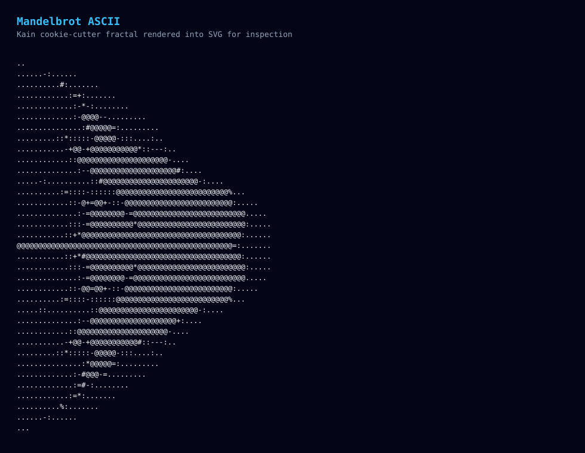

<!doctype html><html><head><meta charset='utf-8'><title>Kain Cookie Cutter</title><style>:root{--bg:#04111f;--panel:#0b1728;--line:#1e293b;--text:#e2e8f0;--muted:#94a3b8;--accent:#38bdf8;--accent2:#2dd4bf;}body{margin:0;min-height:100vh;background:radial-gradient(circle at top,#0b2441 0%,#020617 68%);color:var(--text);font-family:'Space Grotesk','Segoe UI Variable',sans-serif;}main{max-width:1280px;margin:0 auto;padding:32px;}.hero{display:grid;grid-template-columns:1.1fr 0.9fr;gap:20px;margin-bottom:20px;}.panel{background:rgba(11,23,40,0.88);border:1px solid var(--line);border-radius:22px;padding:22px;box-shadow:0 16px 48px rgba(2,6,23,0.35);}h1,h2{margin:0 0 12px 0;}p{margin:0 0 10px 0;color:var(--muted);}.grid{display:grid;grid-template-columns:1fr 1fr;gap:20px;}pre{margin:0;overflow:auto;white-space:pre-wrap;font-family:Consolas,monospace;font-size:12px;line-height:1.4;background:#020617;border-radius:16px;padding:16px;color:#f8fafc;}img{width:100%;display:block;border-radius:18px;border:1px solid rgba(148,163,184,0.2);background:#020617;}.eyebrow{letter-spacing:0.18em;text-transform:uppercase;font-size:12px;color:var(--accent2);}.stat{display:flex;gap:12px;flex-wrap:wrap;margin-top:14px;}.pill{padding:8px 12px;border-radius:999px;background:rgba(56,189,248,0.12);color:#dbeafe;border:1px solid rgba(56,189,248,0.2);font-family:Consolas,monospace;font-size:12px;}</style></head><body><main><section class='hero'><section class='panel'><p class='eyebrow'>Kain / Cookie Cutter</p><h1>One lab, four rites of passage</h1><p>This Kain program generates a standalone quine source file, runs Conway's Game of Life with double-buffered state, renders an ASCII Mandelbrot set, and evaluates a tiny closure-capable Lisp.</p><div class='stat'><span class='pill'>quine bytes 3985</span><span class='pill'>life svg ready</span><span class='pill'>mandelbrot ascii ready</span><span class='pill'>lisp closures = 42</span></div></section><section class='panel'><h2>Generated Files</h2><pre>game_of_life.svg
mandelbrot.svg
game_of_life_frames.txt
mandelbrot_ascii.txt
lisp_report.txt
showcase_report.txt</pre></section></section><section class='grid'><section class='panel'><h2>Game of Life</h2></section><section class='panel'><h2>Mandelbrot</h2></section><section class='panel'><h2>Lisp</h2><pre>LISP
define_make_adder=<closure#0>
 define_add_seven=<closure#1>
 (add-seven 35)=42
 (list 1 2 3 4)=[1 2 3 4]
 (hash ...)={language: "kain", score: 42}
 (concat ...)="cookie cutter"
</pre></section><section class='panel'><h2>Report</h2><pre>COOKIE CUTTER KAIN LAB
======================
QUINE
source_bytes=3985
contains_main=true
contains_marker=true

GAME OF LIFE
grid=24x16
frames=8
alive_generation_0=16
alive_generation_7=31

MANDELBROT
grid=78x36
max_iterations=32
contains_core=true

LISP
define_make_adder=<closure#0>
 define_add_seven=<closure#1>
 (add-seven 35)=42
 (list 1 2 3 4)=[1 2 3 4]
 (hash ...)={language: "kain", score: 42}
 (concat ...)="cookie cutter"

</pre></section></section></main></body></html>